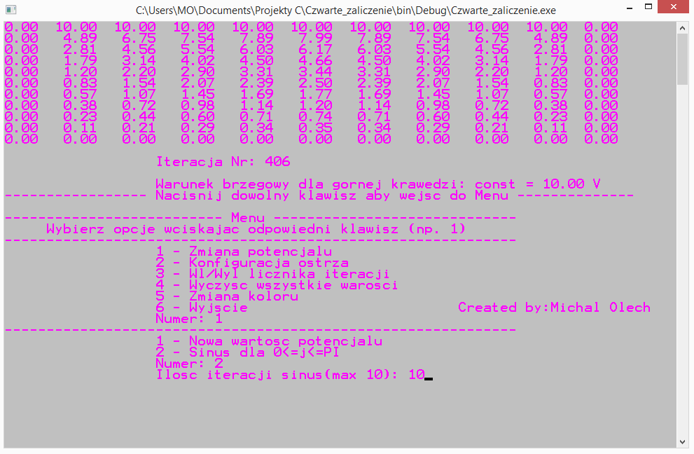
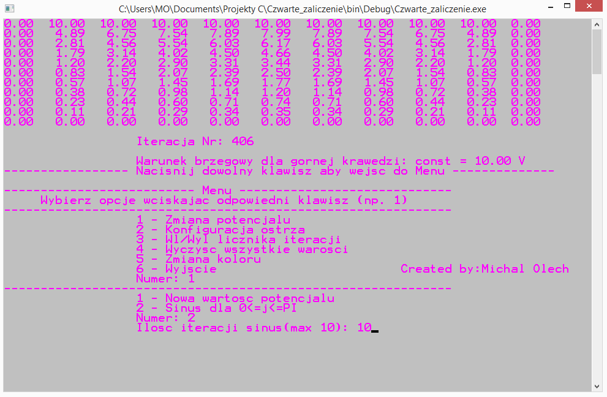

PROJEKTY
NorskMemo
Aplikacja służąca do nauki języka norweskiego.
Po zalogowaniu się zostaje odblokowana możliwość wczytania bazy danych (w tej wersji dostępny zasób: czasowniki i przysłówki). Zadaniem użytkownika jest przetłumaczenie danego wyrażenia po norwesku na angielski.
• Zapis wyniku do pliku tekstowego: poprawnych i błędnych odpowiedzi.
• Eksport i import preferencji użytkownika (wymiary okna oraz rozmiar czcionki).
• Zmiana rozmiaru czcionki.
• Panel z przyciskiem odtwarzającym syntezator mowy danego wyrażenia norweskiego wraz z możliwością dostosowania natężenia dźwięku i
balansu stereo.
Użytkownik w każdej chwili ma możliwość schowania panelu za pomocą przycisków opcji w pasku menu.
• Opcja „Tylko do odczytu” dezaktywująca zapis do pliku tekstowego.
• Tworzenie aplikacji w bibliotece Swing.
• Programowanie zorientowane obiektowo.
• Obsługa zdarzeń interfejsu użytkownika.
• Wczytywanie i zapis do pliku (klasy Scanner i FileWriter).
• Zapis i wczytywanie preferencji użytkownika(klasa Preferences).
• Wczytywanie danych logowania(klasa JPasswordField).
• Tworzenie okien dialogowych(klasa JDialog).
• Zapis danych ze stron internetowych(Biblioteka Resty).
• Odtwarzanie plików .mp3 (Biblioteka JavaFX).
• Ręczne ustawianie rozkładu komponentów (klasa GroupLayout).
PagesCheck
Aplikacja służąca do sprawdzenia wymaganej ilości stron do przeczytania dziennie w celu ukończenia danej książki/książek o tematyce IT w wyznaczonym terminie.
Użytkownik w pierwszym polu edycyjnym z podpisem „Wpisz termin”, wpisuje wyznaczony termin na przeczytanie. Pole edycyjne z podpisem „Wpisz nr strony” służy do wpisania strony aktualnie czytanej książki lub 0 gdy użytkownik nie zaczął. Następnie należy wpisać ilość stron książki lub książek (ze znakiem ‘+’). Kolejne dwa pola powinno się wypełniać od lewej do prawej, wpisując tytuł książki, a w drugiej kolejności autora. Wyjście z pola zawierającego dane autora, skutkuję automatycznym załadowaniem ze strony Helion.pl danych odpowiadających kryteriom wyszukiwania (zazwyczaj wystarczy wypełnić tylko jedno pole [dowolnie ze znakami lub bez polskich znaków], aby otrzymać bazę danych). Po wybraniu właściwego tytułu, użytkownik załadowuje wszystkie dane do pól wraz z okładką książki w postaci ikony wyświetlanej po prawej stronie.
• Zapis do pliku tekstowego wygenerowanych danych wraz z aktualną datą.
• Możliwość zmiany koloru tła oraz rozmiaru czcionki.
• Automatyczny zapis preferencji użytkownika w trakcie zamykania aplikacji (rozmiary okna i czcionki oraz kolor tła ).
• Pasek ładowania wyświetlany w momencie wczytywania danych ze strony internetowej.
• Wczytywanie danych ze stron internetowych (klasa BufferedReader).
• Operacje na datach (klasy DataFormat i Calendar).
• Zapis i odczyt ustawień użytkownika (klasa Proporties).
Analizator BVH
Aplikacja pozwalająca zobrazować i przeanalizować dane ruchu z pliku .bvh zapisanych z kamer typu Kinect.
Po wczytaniu pliku użytkownik ma możliwość wyboru kończyny typu wykresu 3D/2D oraz płaszczyzny. Każda klatka nagrania jest reprezentowana przez jeden punkt na wykresie. W kolejnej zakładce menu na podstawie wyboru użytkownika jest generowany wykres częstotliwości na podstawie algorytmu Szybkiej Transformaty Fouriera FFT. Istnieje możliwość porównania przebiegów z dwóch różnych plików na jednym wykresie 2D.
• Wyświetlanie etykiet punktów na wykresie 3D oraz ich interpolacja.
• Wszystkie wykresy posiadają funkcje nasłuchujące, dające możliwość rotacji bądź zmiany zakresu za pomocą przycisków i ruchów myszy.
• Analiza FFT Szybkiej Transformaty Fouriera dla danej kończyny.
• Tworzenie GUI w bibliotece JavaFX.
• Tworzenie obiektów 3D oraz manipulacja obiektami w przestrzeni trójwymiarowej (klasy dziedziczące po klasie Node).
• Tworzenie styli CSS obiektów interfejsu.
• Tworzenie wykresów 2D (klasa LineChart itp.).
• Dopasowywanie wartości danych do skali wykresu 3D.
Arkanoid
Moja implementacja klasycznej gry na PC Arkanoid w celu nabycia umiejętności sprawnego posługiwania się wątkami.
Użytkownik ma za zadanie zbicie wszystkich cegieł za pomocą piłki odbijanej paletką. W nowym wątku jest tworzony panel na którym w pętli iteracyjnie rysowany jest obiekt klasy Ellipse2D i odświeżany. Jeżeli obiekt osiągnie pułap wysokości panelu, to automatycznie gra jest przerywana. W osobnym wątku jest uruchomione rysowanie „paletki”, obiektu klasy Rectangle2D, która wraz z przemieszczaniem się przez przyciśnięcia klawiszy strzałek (lewo i prawo) przez użytkownika notowane w funkcjach nasłuchujących, odnotowuje aktualne położenie co powoduję iż „piłka” jest w stanie zmienić kierunek ruchu. W celu dynamicznej rozgrywki, trafienie w końcówki paletki powoduje odbicie piłki w tym samym kierunku.
• Tworzenie i obsługa wątków (klasa Thread).
• Tworzenie elementów graficznych w bibliotece Swing.
Kalkulator
Aplikacja napisana w języku C++ utworzona na podstawie biblioteki Qt, posiadająca podstawowe funkcje kalkulatora.
Wartości tekstowe zapisane na przyciskach są pobierane i konwertowane na zmienne typu double. Przyciski oznaczone jako symbole działań arytmetycznych, wywołują funkcję obliczającą, a następnie wyświetlają wynik na podstawie danego znaku po wywołaniu po raz drugi. Przyciski posiadają przypisane funkcje nasłuchujące SIGNAL przy puszczeniu klawisza myszki oraz funkcję wywoływaną w SLOT. Rzutowanie funkcji sender() na wskaźnik QPushButton, pozwala uzyskać wskaźnik do klawiszy. Wywołanie metody setCheckable(true) dla danego klawisza pozwala na sprawdzenie ostatniej aktywności użytkownika.
• Tworzenie podstawowych interfejsów użytkownika w bibliotece Qt.
• Tworzenie i operowanie wskaźnikami.
Okładka Kondensatora
 

Program umożliwiający rozwiązanie elektrostatycznego zagadnienia Dirichleta w płaskich obszarach geometrycznych, będących przekrojem poprzecznym układów nieograniczonych w trzecim wymiarze. Projekt wykonany w ramach uczelnianego kursu „Metody Numeryczne”.
W nieskończonej pętli while odświeżane są dane potencjałów elektrycznych w strukturach na podstawie dodawania sąsiednich komórek będących „przestrzenią” do komórek imitujących okładkę kondensatora i ostrza. Użytkownik po naciśnięciu dowolnego klawisza zatrzymuję działanie pętli i otwiera menu. Wartości potencjałów okładki możliwe są do wygenerowania na podstawie przebiegu funkcji sinus po wcześniejszym ustaleniu dokładności obliczeń (tzn. ilości iteracji pętli obliczającej wartości sinusa na podstawie szeregu). Dodatkową opcją jest możliwość zmiany koloru tła konsoli wpisując odpowiednią składnię (np. COLOR 12) i wczytując do funkcji system(). Działanie na zasadzie przypisania adresu ciągu znaków do wskaźnika typu char.
• Opanowanie składni języka C.
• Tworzenie i operowanie strukturami.
• Implementacja algorytmu obliczającego wartości funkcji sinus.
i ta strona :)
O MNIE
Student III roku elektrotechniki na wydziale elektrycznym Politechniki Wrocławskiej. Choć mój kierunek nie jest stricte związany z informatyką, to w programie studiów zawarte były kursy podstaw programowania w C, matlab czy programowania mikrokontrolerów z rodziny Atmega. Dzięki temu miałem okazję poznać do tej pory nieznany mi obszar nauk ścisłych, co zaowocowało wielką ciekawością i usilną chęcią zgłębienia reszty jej aspektów. Cała moja podróż po "odmętach" programowania, uświadomiła mi, iż to jest właśnie to co chciałbym robić w życiu. Chęć rozwiązania każdego problemu napotkanego na swojej drodze pochłaniała mnie na tyle głęboko, że spędzone godziny mijały jak minuty. Programowanie daje mi dużą satysfakcję i wielką radość tworzenia, jak komponowanie utworu dla kompozytora, który jest generalnie ograniczony tylko przez swoją wyobraźnię. Oprócz programowania interesuję się również tworzeniem muzyki elektronicznej (stąd ta analogia) oraz uprawianiem sportów ekstremalnych (deskorolka, snowboard oraz windsurfing).
KONTAKT
micavanco@gmail.com
513514703